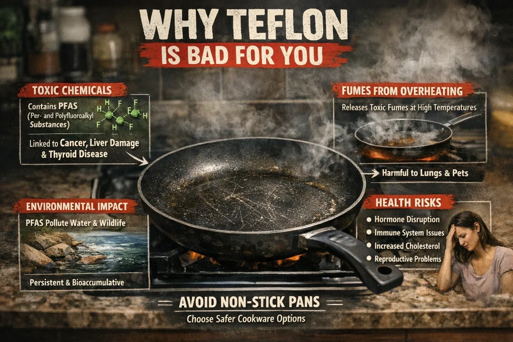
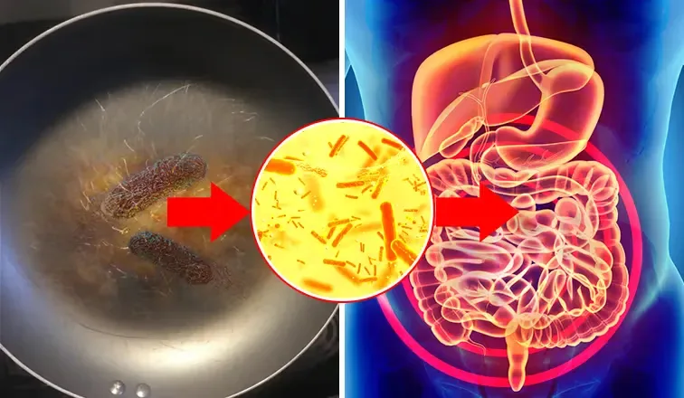

Pro Chef Warns: "After 34 Years in Kitchens, I Threw Out Every Non-Stick Pan I Own"
He cooked on the same pans America trusts for three decades. Then one blood test, and one question from an ER doctor who eats at his restaurant, changed everything he thought he knew about what's really in our kitchens.

Chef Tomas threw out every non-stick pan in his restaurant - and then his home.
Last spring, on a quiet Tuesday morning before service, I carried $1,900 worth of cookware out the back door of my restaurant and dropped it in the dumpster.
Sixteen pans. Some of them barely three months old.
My sous chef thought I'd lost my mind. My wife definitely thought I'd lost my mind, because that same weekend I went home and did the exact same thing to our kitchen - the non-stick skillet we made the kids' pancakes on for years, the “ceramic” pan we got as a wedding gift, all of it, straight into the garbage.
I've been a professional chef for 34 years. I've run kitchens that served 400 covers a night. And I want to tell you what I learned that made me throw out every non-stick pan I own, because almost nobody outside a professional kitchen ever hears it.
The Secret Every Line Cook Knows (And No Home Cook Is Told)
Here's something the cookware industry would prefer you never think about:
Restaurants treat non-stick pans as disposable.
Not “replace every few years” disposable. In a busy kitchen, a non-stick pan lasts weeks. We used to buy them in bulk, like napkins. The moment the surface scratched or the food started grabbing, that pan went in the bin and a new one came off the shelf.
Ask yourself the question I never asked for 30 years:
If a non-stick coating “wears off” a little more every single day… where does the coating go?
It doesn't evaporate. It doesn't vanish.
It goes into the food.
In a restaurant, the pan gets tossed long before it gets bad. In a home kitchen, that same pan stays on the stove for five, eight, ten years. Scratched, flaking, cooked on daily.
The people with the most cookware knowledge use these pans for weeks. The people with the least keep them for a decade. That should bother you. It bothers me.

Every scratch releases more of the coating - and in a home kitchen, the pan stays in service for years.
The Blood Test That Made It Personal
I might never have connected the dots if it weren't for Dr. Karen.
Karen is an emergency physician and a Friday-night regular at my chef's table. Last year, after my annual physical came back with numbers my doctor “wanted to keep an eye on,” I mentioned it to her between courses. Half joking, I said the restaurant business was finally catching up with me.
She didn't laugh. She asked me one question:
“Tomas, how many hours a day do you stand over non-stick cookware?”
Then she told me what she sees from the other side. That the chemicals used in non-stick coatings belong to a family called PFAS - the so-called “forever chemicals,” because they don't break down in the body or the environment. That studies have linked certain PFAS exposure to concerns no one wants near their family's dinner.

Chef Tomas and Dr. Karen at his chef's table / restaurant counter, mid-conversation. Candid, editorial tone
And then she told me the part that stopped me cold: overheat a non-stick pan badly enough and the fumes alone can cause a flu-like illness. It has a name - polymer fume fever. Bird owners have known a version of this for decades: the fumes from an overheated non-stick pan can kill a pet bird in the same room.
A chef and an ER doctor, comparing notes across a counter. Two different kitchens. The same conclusion.
I got the blood test. I won't share every number, but I'll say this: after 34 years leaning over flaking pans, I stopped wondering whether this was worth taking seriously.
The 500-Degree Problem
Once I started digging, the mechanism turned out to be brutally simple. Every chef knows it instinctively, even if we never say it out loud.
Traditional non-stick coatings start to break down around 500°F.
A proper sear happens at 400-600°F. A preheated empty pan on a home stove can pass 500°F in under three minutes. Which means the everyday act of cooking - the thing the pan is FOR - is exactly what pushes the coating past its limit.

Close-up of a stovetop thermometer or dial pushing past 500°F, or a pan visibly smoking on a home burner. Reinforces the '500-degree problem' beat.
So you're left with a product that:
✓ Degrades at cooking temperatures. The better your sear, the faster it breaks down.
✓ Sheds where you can't see it. Every scratch from a metal spoon, every pass with a scouring pad, releases more.
✓ Is designed to be replaced. The industry's own answer to a worn coating isn't “it's fine.” It's “buy a new pan every couple of years.” That's not a safety plan. That's a subscription.
That's why they don't survive in restaurants. We just never followed the logic home.
Why the “Safe” Alternatives Frustrated Me for Years
Believe me, chefs have tried everything. Here's the honest professional read on each:
Stainless steel? This is what most pro kitchens run on, and it's safe. But I've watched home cooks fight stainless their whole lives - food welds itself to the surface, and cleanup is a project. You shouldn't need a culinary degree to fry an egg.
Cast iron? I love cast iron. I also have a 34-year-old's wrists no more. Most cast-iron skillets weigh 6-8 pounds, they rust if you look at them wrong, and the seasoning is a part-time job. My mother finally gave hers up at 70 because she couldn't lift it to the sink.
“Ceramic” non-stick? The one that fooled me too. Most ceramic pans aren't ceramic - they're a thinner coating in a costume. They're wonderful for about six months. Then the surface quietly dies, food starts sticking, and the flaking problem is back. It's the same story with a greener label.
For a while I honestly believed those were the only options: safe but frustrating, or convenient but compromised.
Then a chef I worked with in Vegas told me what he'd put in his home kitchen.

(bad conditions) Stainless steel, cast iron, and a 'ceramic' non-stick pan lined up side by side on a counter
The Pan With Nothing to Hide (Literally)

The Titanium Pro Pan: solid titanium, no coating - because there's nothing on it to flake off.
What he showed me was a pure titanium pan. And the idea is so simple I was almost angry I hadn't seen it sooner:
The only guaranteed way to never eat your pan's coating… is a pan with no coating.
Titanium isn't a layer sprayed onto metal. It IS the metal. The same biocompatible material surgeons put inside the human body - hip implants, dental implants, heart stents - because it's one of the few metals the body simply accepts. It doesn't leach, doesn't react with acidic food, doesn't rust, and doesn't flake, because there's nothing on it TO flake.
Instead of a chemical coating, the cooking surface uses a micro-textured pattern inspired by the lotus leaf - thousands of microscopic ridges that food sits on top of rather than bonding to. The release properties actually activate with heat: get the pan properly hot, add a little oil or butter, and food lets go.
And because it's solid titanium:
✓ It's roughly 300% stronger than stainless steel at a fraction of the weight of cast iron. My mother can lift this one.
✓ Metal utensils are fine. Scouring pads are fine. The things that kill a non-stick pan in weeks don't touch it.
✓ It's the last pan you buy, not the next pan you replace. The company backs it with a lifetime warranty, which tells you what they think of the “replace every two years” business model.
✓ It's rated oven-safe to 750°F - there is no coating to destroy, so there's no temperature ceiling that matters in a home kitchen. Sear as hard as you want.
See Why Over 100,000 American Families Have Made the Switch
The Titanium Pro Pan™ is currently available with a special introductory discount for US customers
Check Availability NowThe Torture Test I Ran Before I'd Recommend It to Anyone
I'm a skeptic by trade. Before this pan earned a place in my kitchen - let alone this article - I did to it what a restaurant does to cookware:
I dragged a metal fish spatula across it, hard, fifty times. I scrubbed it with steel wool. I blasted it over my highest burner and threw in a cold, wet steak - the thermal-shock move that warps cheap pans. I simmered tomato sauce in it for two hours, the acid test that eats through inferior surfaces.
Then I cooked an egg.
It released. Not because of a chemical trampoline that will be gone by Christmas, but because the surface is what it is, all the way through. It will cook the same way in ten years, because there is nothing to wear off.
Watch it for yourself: a properly preheated Titanium Pro Pan releasing eggs with just a touch of butter - no coating involved.
One honest note, chef to home cook: give it a week to get the feel. Preheat it for a minute or two, use a little butter or oil, and don't blast delicate food on max heat. That's not a workaround - that's just how real cookware works, and it's a small price for a pan with nothing to hide.
“Prove It”: The Lab Results
Talk is cheap in the cookware aisle, so here's the part that finally satisfied both the chef and the doctor:
The Titanium Pro Pan is independently tested by SGS, one of the world's leading inspection and certification labs. Not a marketing department. A lab.
When I showed Karen the SGS documentation, her review was very ER-doctor: “This is what I wish every pan in America had to show.”
What Changed in My Kitchen
The restaurant runs on titanium and stainless now. But honestly, the change I care about happens on Sundays.
Sunday is when my grandkids come over and we make what they call “Pop's eggs.” For 34 years I cooked professionally and never once thought about the pan while I did it. Now I think about it every time - because for the first time, the answer to “what's in the pan?” is: titanium. That's it. That's the whole list.
Warm, candid shot of an older man cooking eggs with grandkids nearby at the counter.
I'm not the only one who got here. Over 100,000 American families have made the same switch, and the reviews read like my own story on repeat:
★★★★★ “I've had mine for 8 months of daily use. My old ceramic pan died in 4. This one still cooks like day one.”
— Diane R., 66 - Florida · Verified Purchaser
★★★★★ “My husband was on me about the price. He's now the one who won't cook on anything else. Get the lid.”
— Carol M., 61 - Texas · Verified Purchaser
★★★★★ “I bought it after my oncologist told me to reduce chemical exposure wherever I could. It's a small thing that feels like a big thing.”
— Patricia S., 58 - Ohio · Verified Purchaser
The Math (And the Catch)
A chef's honest take on the price:
The Titanium Pro Pan normally sells for $459 - which, for a surgical-grade titanium pan with a lifetime warranty, is roughly what serious cookware costs. Right now, direct from the maker, it's $149.99. That's over $310 off, and it includes a 12″ lid ($30 value) and 6 Wellness Cooking eBooks ($180 value) free.
Compare that honestly with the alternative: a $40 non-stick pan replaced every 2 years is $600+ over 30 years - and you eat the coating along the way. One titanium pan is $149.99, once.

Simple long-term cost chart: repeated $40 non-stick replacement over 30 years vs. one $149.99 titanium pan.
The catch is supply. Titanium is expensive to work with and each batch takes months to produce; the current allocation is more than 80% claimed and the next shipment date isn't confirmed. If the availability page below is still live, you can order today with a 90-day money-back guarantee - cook on it for three months, and if you don't love it, send it back for a full refund. The company can offer that because almost nobody does.
Make the Same Choice This Chef Made for His Family
✓ 90-Day Money-Back Guarantee
✓ Free Shipping Across the US
✓ Pure Titanium Certified
✓ Lifetime Warranty
✓ FREE 12″ Pan Lid ($30 Value)
✓ FREE 6 Wellness Cooking eBooks ($180 Value)
Every order helps us reach our goal of 200,000 American families cooking safely by 2027


One Last Thing (Closing)
People ask if I regret dumpstering $1,900 of cookware. I'll tell you what I told my sous chef that Tuesday morning:
In 34 years, I have never once regretted throwing out a bad ingredient. And it turns out the pan was an ingredient all along.
Signoff: Chef Tomas has spent 34 years in professional kitchens, including 12 as an executive chef. He cooks at home on the Titanium Pro Pan.

Final warm image of Chef Tomas cooking at home with family
Join 100,000+ Families Cooking Safely with the Titanium Pro Pan
Special introductory pricing available while supplies last
Claim Up To 50% Discount Now90-Day Money-Back Guarantee | Free US Shipping | Lifetime Warranty
Reader Comments (241)